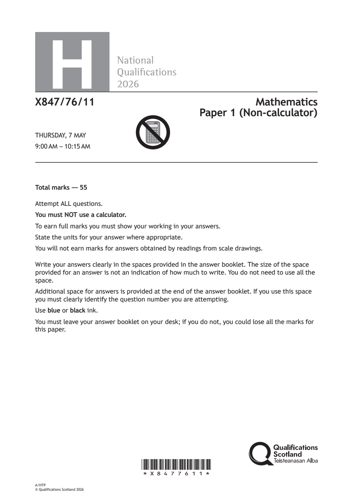
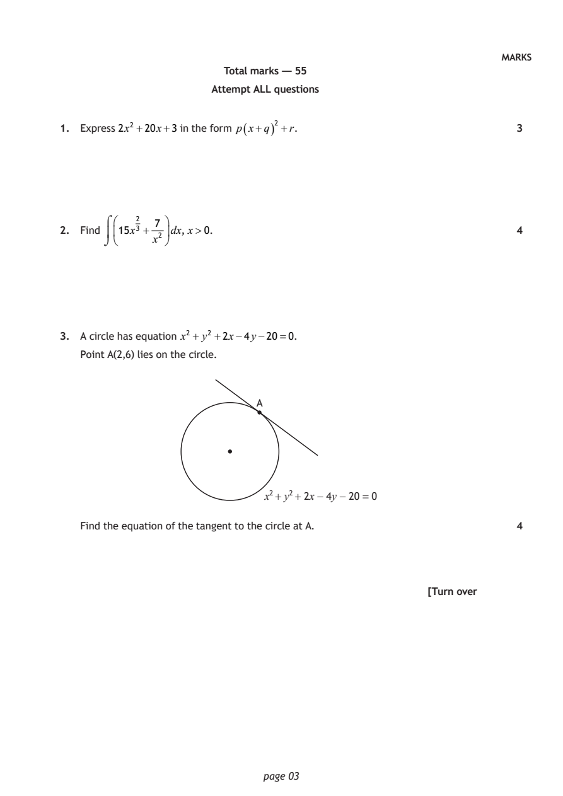
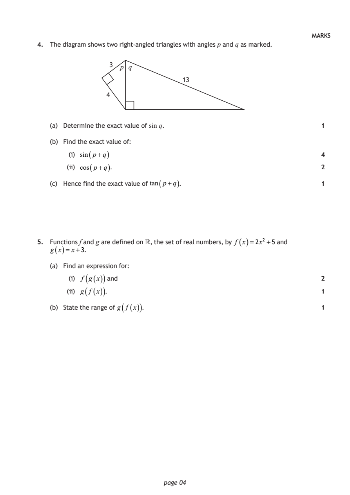
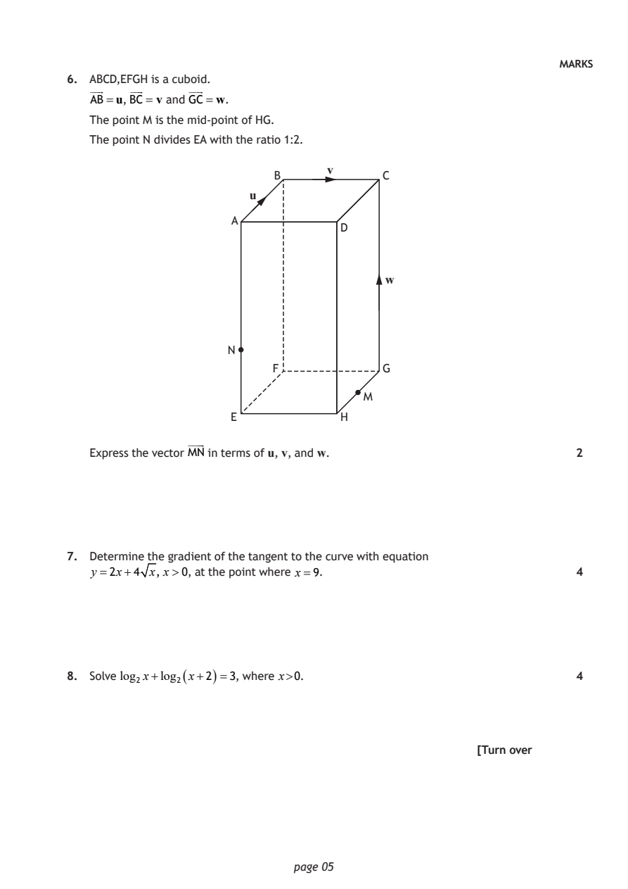
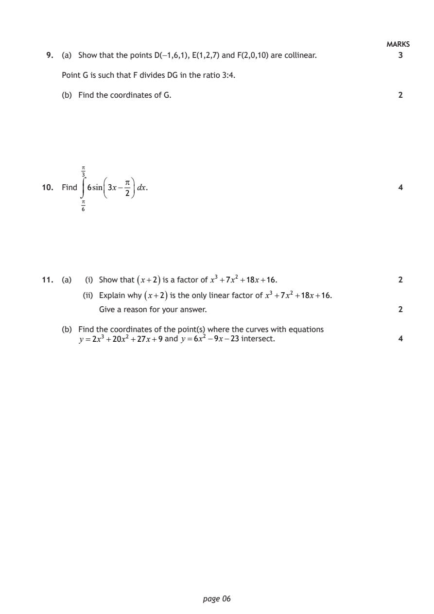
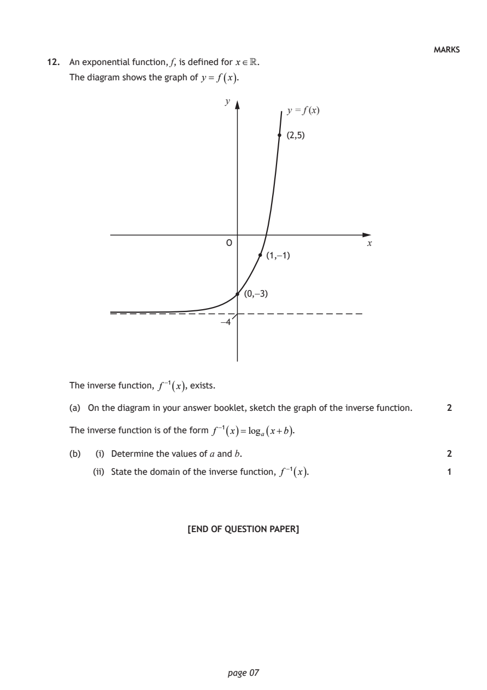
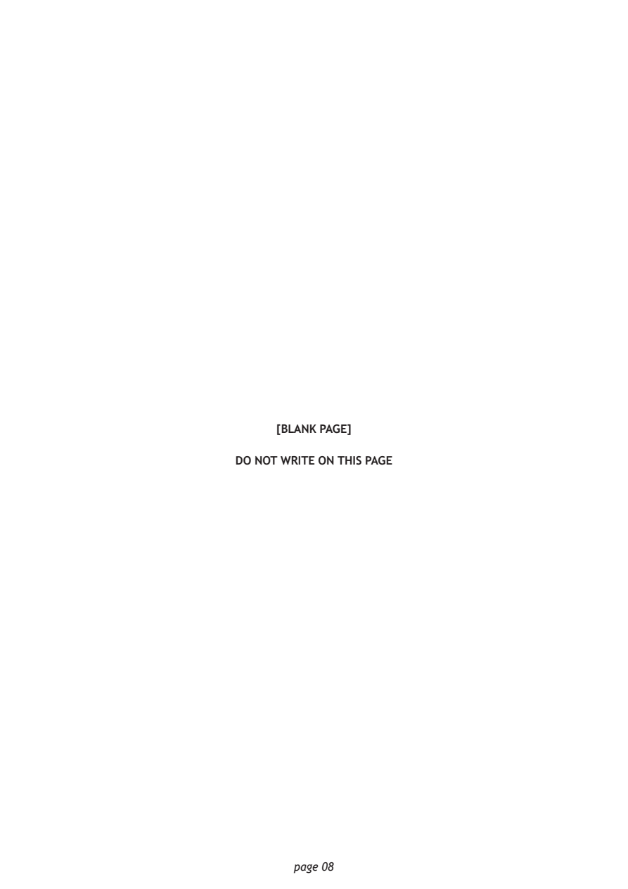

2026 Higher Mathematics - Paper 1 questions
Source: Scottish Qualifications Authority (SQA) / Qualifications Scotland. This is a StemInteract HTML companion, not an official HTML edition. Selectable text is supplied alongside original page images. Use the images or original PDF for equations, powers, fractions, vector notation, tables and diagrams; text extraction cannot fully preserve mathematical layout.
Jump to a question
PDF page 1

Selectable page text
H
National
Qualications
2026
X847/76/11 Mathematics
Paper 1 (Non‑calculator)
THURSDAY, 7 MAY
9:00 AM – 10:15 AM
Total marks — 55
Attempt ALL questions.
You must NOT use a calculator.
To earn full marks you must show your working in your answers.
State the units for your answer where appropriate.
You will not earn marks for answers obtained by readings from scale drawings.
Write your answers clearly in the spaces provided in the answer booklet. The size of the space
provided for an answer is not an indication of how much to write. You do not need to use all the
space.
Additional space for answers is provided at the end of the answer booklet. If you use this space
you must clearly identify the question number you are attempting.
Use blue or black ink.
You must leave your answer booklet on your desk; if you do not, you could lose all the marks for
this paper.
*X8477611*
A/HTP
© Qualifications Scotland 2026PDF page 2

Selectable page text
FORMULAE LIST
Circle
The equation x² + y²+ 2gx + 2fy + c=0 represents a circle centre (−g, −f ) and radius g² + f ² −c.
The equation (x−a)² + (y−b)² =r² represents a circle centre (a, b) and radius r.
Scalar product ab= a bcos θ, where θ is the angle between a and b
a₁ b₁
or ab=a₁b₁+a₂b₂ +a₃b₃ where a= a₂ and b= b₂ .
a₃ b₃
Trigonometric formulae sin(A±B)=sinA cosB ± cos AsinB
cos(A±B)=cosAcosB ∓ sinAsinB
sin2A =2sinAcosA
cos2A=cos²A−sin²A
=2cos²A−1
=1−2 sin²A
Table of standard derivatives
f(x) f′(x)
sinax acosax
cosax −asinax
Table of standard integrals
f(x) ∫ f(x)dx
1
sinax − cosax + c
a
1
cosax sinax + c
a
page 02PDF page 3
Paper 1, Question 1Paper 1, Question 2Paper 1, Question 3
Selectable page text
MARKS
Total marks — 55
Attempt ALL questions
1. Express 2x² +20x+3 in the form p ( x+q ) ² +r. 3
7
2. Find 15x²³ + dx, x>0. 4
x²
3. A circle has equation x² + y² +2x−4y−20=0.
Point A(2,6) lies on the circle.
A
x² + y² + 2x − 4y − 20 = 0
Find the equation of the tangent to the circle at A. 4
[Turn over
page 03PDF page 4
Paper 1, Question 4Paper 1, Question 5
Selectable page text
MARKS
4. The diagram shows two right‑angled triangles with angles p and q as marked.
3
p q
13
4
(a) Determine the exact value of sin q. 1
(b) Find the exact value of:
(i) sin ( p+q ) 4
(ii) cos ( p+q ). 2
(c) Hence find the exact value of tan ( p+q ) . 1
5. Functions f and g are defined on , the set of real numbers, by f ( x )=2x² +5 and
g ( x )= x+3.
(a) Find an expression for:
( ( ))
(i) f g x and 2
(ii) g ( f ( x )) . 1
(b) State the range of g ( f ( x )) . 1
page 04PDF page 5
Paper 1, Question 6Paper 1, Question 7Paper 1, Question 8
Selectable page text
MARKS
6. ABCD,EFGH is a cuboid.
AB=u, BC = v and GC=w.
The point M is the mid‑point of HG.
The point N divides EA with the ratio 1:2.
v
B C
u
A
D
w
N
F G
M
E H
Express the vector MN in terms of u, v, and w. 2
7. Determine the gradient of the tangent to the curve with equation
y=2x+4 x, x>0, at the point where x=9. 4
8. Solve log₂x+log₂ ( x+2 ) =3, where x>0. 4
[Turn over
page 05PDF page 6
Paper 1, Question 9Paper 1, Question 10Paper 1, Question 11
Selectable page text
MARKS
9. (a) Show that the points D(−1,6,1), E(1,2,7) and F(2,0,10) are collinear. 3
Point G is such that F divides DG in the ratio 3:4.
(b) Find the coordinates of G. 2
3
10. Find 6sin3x− dx. 4
2
6
11. (a) (i) Show that ( x+2 ) is a factor of x³ +7x² +18x+16. 2
(ii) Explain why ( x+2 ) is the only linear factor of x³ +7x² +18x+16.
Give a reason for your answer. 2
(b) Find the coordinates of the point(s) where the curves with equations
y =2x³ +20x² +27x+9 and y=6x² −9x−23 intersect. 4
page 06PDF page 7
Paper 1, Question 12
Selectable page text
MARKS
12. An exponential function, f, is defined for x.
The diagram shows the graph of y = f ( x ).
y
y = f (x)
(2,5)
O x
(1,−1)
(0,−3)
−4
The inverse function, f ⁻¹ ( x ), exists.
(a) On the diagram in your answer booklet, sketch the graph of the inverse function. 2
The inverse function is of the form f ⁻¹ ( x )=logₐ ( x+b ) .
(b) (i) Determine the values of a and b. 2
(ii) State the domain of the inverse function, f ⁻¹ ( x ). 1
[END OF QUESTION PAPER]
page 07PDF page 8

Selectable page text
[BLANK PAGE]
DO NOT WRITE ON THIS PAGE
page 08